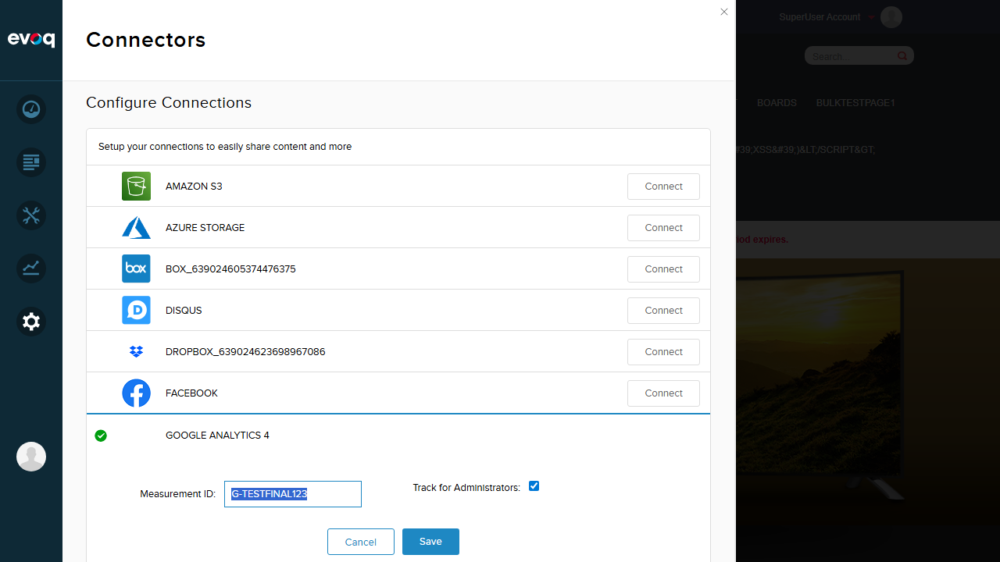

Critical Observation: Feature UI Not Accessible
The Page and Role Picker Integration feature exists in the codebase but is NOT accessible via the current UI.
The website has a "Google Analytics 4" connector installed which uses a simplified interface that does not include the "Advanced Settings" panel where the Page and Role Picker functionality resides.
Per testing philosophy: "Feature exists in code but not visible in UI? Do NOT create a test for it. Add a note in the report under 'Observations'."
Code Analysis: Feature Implementation Exists
The following code files confirm the Page and Role Picker feature is fully implemented:
1. ServicesController.cs
Contains API endpoints for page picker and role loading:
// GetPagePickerOptions() - Returns dropdown configuration
dropdownOptions.Services.GetTreeMethod = "ItemListService/GetPages";
dropdownOptions.Services.SearchTreeMethod = "ItemListService/SearchPages";
dropdownOptions.ItemList.FirstItem = new SerializableKeyValuePair("", "Any Page");
// GetRoles() - Returns roles sorted alphabetically
data.Add(new { RoleId = glbRoleAllUsers, RoleName = "All Users" });
foreach (RoleInfo role in RoleController.Instance.GetRoles(PortalId).OrderBy(r => r.RoleName))
2. connector.js
Contains UI logic for page picker and role dropdown:
// Creates page picker using DNN DropDownList component
var dd = new dnn.DropDownList(null, pagePickerOptions);
pagesDropDowns.push(dd);
// Creates role dropdown from roleData array
advancedViewModel.roleData.push(allRoles[i]);
3. advanced.htm
Contains the Advanced Settings UI template with page/role pickers:
<div class="pagesDropDown -1"></div>
<select id="gaAddRolesDropDown" data-bind="options: roleData,
optionsText: 'RoleName', optionsValue: 'RoleId'"></select>
4. connector.htm
Contains the Advanced Settings link (not rendered in GA4 connector):
<a class="advancedSetting" href="#" data-bind="attr: {title: resx.AdvancedSettings}"></a>
Investigation Steps
Step 1: Login and Navigate to Connectors
Logged in as SuperUser Account and navigated to Settings > Connectors.

Step 2: Access Google Analytics 4 Connector
Located and clicked Edit on the "Google Analytics 4" connector.

Step 3: Examined GA4 Connector Interface
The GA4 connector shows only two fields:
- Measurement ID (configured as G-TESTFINAL123)
- Track for Administrators (checkbox)
No "Advanced Settings" link or icon is present.

Step 4: Tested with Universal Analytics ID
Changed Measurement ID to "UA-12345678-1" (Universal Analytics format) to test if Advanced Settings would appear. The interface remained unchanged - still no Advanced Settings available.